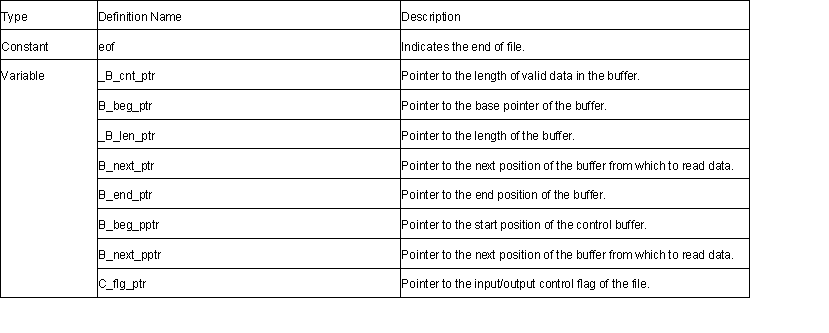

streambuf Class

1. streambuf ::streambuf()
Constructor.
The initial settings are as follows:
_B_cnt_ptr = B_beg_ptr = B_next_ptr = B_end_ptr = C_flg_ptr = 0
B_beg_pptr = &B_beg_ptr
B_next_pptr = &B_next_ptr
2. virtual streambuf ::~streambuf()
Destructor.
3. streambuf* streambuf ::pubsetbuf( char* s, streamsize n)
Defines the buffer for stream input/output.
This function calls setbuf (s,n).
Return value: *this
4. pos_type streambuf ::pubseekoff(off_type off,ios_base::seekdir way, ios_base::openmode
which=(ios_base::openmode)(ios_base::in|ios_base::out))
Moves the position to read or write data for the input/output stream by using the method specified by way.
This function calls seekoff(off,way,which).
Return value: The position of the newly specified stream
5. pos_type streambuf ::pubseekpos( pos_type sp, ios_base::openmode
which=(ios_base::openmode) (ios_base::in | ios_base::out))
Calculates the offset from the beginning of the stream to the current position.
Moves the current stream pointer for sp.
This function calls seekpos(sp,which).
Return value: The offset from the beginning of the stream
6. int streambuf ::pubsync()
Flushes the output stream.This function calls sync().
Return value: 0
7. streamsize streambuf ::in_avail()
Calculates the offset from the end of the input stream to the current position.
Return value: If the position where data is read is valid: The offset from the end of the stream to the current position.
If the position where data is read is invalid: 0 (showmanyc() is called)
8. int_type streambuf ::snextc()
Reads one character. If the character read is not eof, the next character is read.
Return value: If the characters read is not eof: The character read
If the characters read is eof: eof
9. int_type streambuf::sbumpc()
Sets the next pointer after one character is read.
Return value: If the position where data is read is valid: The character read
If the position where data is read is invalid: eof
10. int_type streambuf ::sgetc()
Reads one character.
Return value: If the position where data is read is valid: The character read
If the position where data is read is invalid: eof
11. int streambuf ::sgetn(char* s, streamsize n)
Sets n number of characters in the memory area specified by s. If an eof is found in the string literal, this setting is terminated.
Return value: The specified number of characters.
12. int_type streambuf::sputbackc( char c) ;
If the data read position is correct and the put back data of the position is the same as c, the read position is put back.
Return value: If the read position was put back: The value of c
If the read position was not put back: eof
13. int streambuf::sungetc()
If the data read position is correct, the read position is put back.
Return value: If the read position was put back: The value that was put back
If the read position was not put back: eof
14. int streambuf::sputc(char c)
Inserts characters c.
Return value: If the write position is correct: The value of c
If the write position is incorrect: eof
15. int_type streambuf ::sputn(const char* s, streamsize n)
Inserts n number of characters specified by s.
If the buffer is smaller than n, the number of characters for the buffer is inserted.
Return value: The number of characters inserted
16. char* streambuf ::eback() const
Calculates the start pointer of the input stream.
Return value: Start pointer
17. char* streambuf ::gptr() const
Calculates the next pointer of the input stream.
Return value: The next pointer
18. char* streambuf ::egptr() const
Calculates the end pointer of the input stream.
Return value: End pointer
19. void streambuf ::gbump(int n)
Moves the next pointer of the input stream for n.
20. void streambuf ::setg( char* gbeg, char* gnext, char* gend)
The settings for each pointer of the input stream are as follows: *B_beg_pptr = gbeg;
*B_next_pptr = gnext;
B_end_ptr = gend;
*_B_cnt_ptr = gend-gnext;
*_B_len_ptr = gend-gbeg;
21. char* streambuf ::pbase() const
Calculates the start pointer of the output stream.
Return value: Start pointer
22. char* streambuf ::pptr() const
Calculates the next pointer of the output stream.
Return value: The next pointer
23. char* streambuf ::epptr() const
Calculates the end pointer of the output stream.
Return value: End pointer
24. void streambuf ::pbump( int n)
Moves the next pointer of the output stream for n.
25. void streambuf ::setp( char* pbeg, char* pend)
The settings for each pointer of the output stream are as follows:*B_beg_pptr = pbeg;
*B_next_pptr = pbeg;
B_end_ptr = pend;
*_B_cnt_ptr=pend-pbeg;
*_B_len_ptr=pend-pbeg;
26. virtual streambuf* streambuf ::setbuf(char* s, streamsize n)
For each derived class of streambuf, a defined operation is executed.
Return value: *this (This class does not define the processing)
27. virtual pos_type streambuf ::seekoff(pos_type off, ios_base::seekdir way ,
ios_base::openmode=(ios_base::openmode)(ios_base::in | ios_base::out))
Changes the stream position.
Return value: (-1) (This class does not define the processing)
28. virtual pos_type streambuf ::seekpos(pos_type off,
ios_base::openmode=(ios_base::openmode)(ios_base::in | ios_base::out))
Changes the stream position.
Return value: (-1) (This class does not define the processing)
29. virtual int streambuf ::sync()
Flushes the output stream.
Return value: 0 (This class does not define the processing)
30. virtual int streambuf ::showmanyc()
Calculates the number of valid characters in the input stream.
Return value: 0 (This class does not define the processing)
31. virtual streamsize streambuf ::xsgetn( char* s, streamsize n)
Sets n number of characters in the memory area specified by s.
If the buffer is smaller than n, the numbers of characters for the buffer is inserted.
Return value: The number of characters input
32. virtual int_type streambuf ::underflow()
Reads one character without moving the stream position.
Return value: eof (This class does not define the processing)
33. virtual int_type streambuf ::uflow()
Reads one character of the next pointer.
Return value: eof (This class does not define the processing)
34. virtual int_type streambuf ::pbackfail(int_type c=eof)
Puts back the character specified by c.
Return value: eof (This class does not define the processing)
35. virtual streamsize streambuf ::xsputn(const char* s, streamsize n)
Inserts n number of characters shown in n specified by s.
If the buffer is smaller than n, the number of characters for the buffer is inserted.
Return value: The number of characters inserted
36. virtual int_type streambuf ::overflow(int_type c=eof)
Inserts c in the output stream.
Return value: eof (This class does not define the processing)